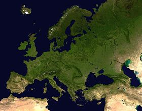
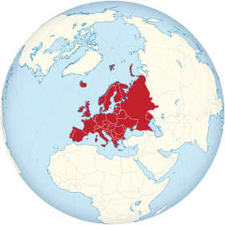

تعريفها
أوروبا إحدى قارات العالم السبع، وجغرافيًّا تعد شبه جزيرة كبيرة تكون الجزء الغربي الممتد من أوراسيا بين جبال الأورال وجبال القوقاز وبحر قزوين من الشرق والمحيط الأطلسي من الغرب والبحر الأبيض المتوسط والبحر الأسود ومنطقة القوقاز من الجنوب والمحيط المتجمد الشمالي من الشمال، وتعتبر قارة صغيرة نسبيًا مقارنة ببقية القارات لكن قارة أستراليا أصغر منها، إلى جانب حدود أوروبا الجغرافية يعود مفهوم حدود القارة إلى العصور القديمة الكلاسيكية حيث أصبح مصطلح «قارة» جغرافيّا في المقام الأول، ولكنه يشمل أيضًا العناصر الثقافية والسياسية.
السياحة فى أوروبا
تعد أوروبا مقصدًا للسياح على مر العصور لما تمتلكه البلاد من مقومات سياحية تضعها على الخريطة العالمية للسياحة. كذلك تعد السياحة مصدرًا هامًا للدخل القومي للعديد من الدول الأوروبية. تحتل ستة دول أوروبية في قائمة الدول السياحية الأكثر زيارة. تأتي فرنسا في مقدمة الدول الأوروبية السياحية سنة 2013 مع 84.7 مليون سائح، وتلقت إسبانيا 60.7 مليون سائح، في حين تلقت إيطاليا 47.7 مليون سائح، وتلقت ألمانيا 31.5 مليون سائح، تلاها المملكة المتحدة مع 31.2 مليون في حين تلقّت روسيا حوالي 28 مليون سائح سنة 2013. تجتذب مقومات السياحة الترفيهية المختلفة عددًا كبيرًا من السائحين من جميع أنحاء العالم، نظرًا لما تتصف به أوروبا من شواطئ متميّزة على الأبيض المتوسط والأدرياتيكي والأسود، والتي تُعرف كذلك بسياحة الشواطئ. ولتطوير سياحة الشواطئ أستثمر القطاع العام والخاص أموالاً لإعداد السياحة وإقامة المنشآت المختلفة لخدمة المستجمّين فضلًا عن سلسلة الفنادق المختلفة. بعض أشهر المنتجعات سياحة الشاطئ الريفييرا الفرنسية ومن أشهر مدنها نيس، وكان، وموناكو، وتولون ومارسيليا، والريفييرا الإيطالية، وجزر اليونان مثل كريت، ورودس وسانتوريني، وفي إسبانيا كل من جزر كنارية وجزر البليار وكوستا برافا، وفي البرتغال الغرب وفي بلغاريا منطقة الرمال الذهبية التي تضم فارنا وبورغاس وفي قبرص أياناب


السفر إلى أوروبا
يتفق المؤرخين أن أوروبا، خاصةً في اليونان القديمة وروما القديمة هي مهد الحضارة الغربية المؤثرة على العالم. وقد لعبت أوروبا دورًا بارزًا في الشؤون العالمية بدءاً من القرن الـ 15، وخاصًة عقب بداية الإستعمار. عندما سيطرت الدول الأوروبية على العالم كله تقريبًا. وأوروبا قارة مفعمة بالتنوع الثقافيّ والجغرافيّ واللغويّ، وكل دولة تحتضنها حدود أوروبا الجغرافية تتمتع بمزايا فريدة تضيف نكهة خاصة.
اماكن سياحية في أوروبا
المقالة الرئيسية فنادق أوروبافبدءاً بالتنزه في المروج المحيطة بالقلاع التي تُذكّر المرء بالقصص الخيالية القديمة، مروراً بالتمتّع بالمهرجانات المحلية النابضة بالحياة، خلال رحلة السياحة في أوروبا وانتهاءً بإيجاد مقاهٍ يُقدّر عمرها بمئات السنين مخبّأة في ركن من أركان حيّ مرصوف بالحجارة، فإن جاذبية هذه القارة المتنوعة لا تقاوم، وكذلك تجعل من تجربة السياحة في أوروبا تجربة لا تنسى


|
أوروبا |
|  |
|  |
|
خصائص جغرافية المساحة : 10186000 كيلومتر مربع |
|
عدد السكان عدد السكان :747636045 الكثافة السكانية : 73.39 نسمة/كم2 |
|
فيديو تعريفى |